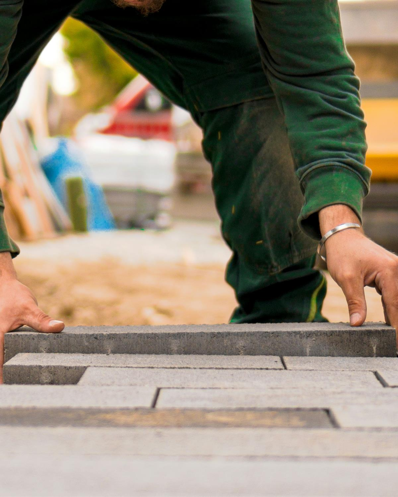
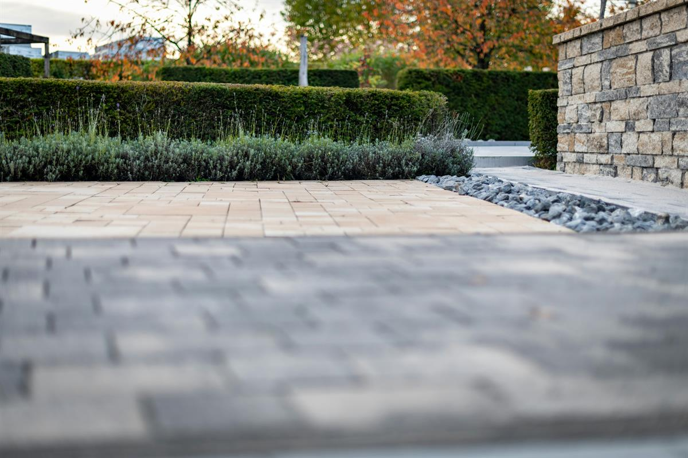
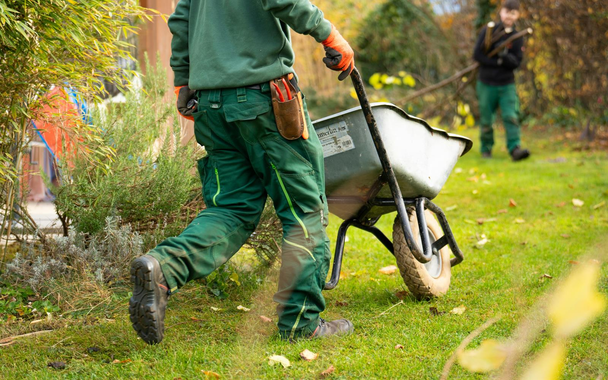

01 · Privat
Ihr Garten
Neu anlegen oder renovieren, mit Weg, Einfahrt und Sichtschutz.
- Renovierung und Neugestaltung von Gärten
- Pflaster für Wege, Terrassen und Einfahrten
- Zaunbau und Sichtschutz
Garten- und Landschaftsbau · Ochtrup · seit 1982
Pflaster, Außenanlagen, Spielplätze und Grünpflege für private, gewerbliche und öffentliche Auftraggeber im Westmünsterland.

Für wen wir bauen
Vom Privatgarten bis zur Industriefläche: Krabbe plant, baut und pflegt Außenanlagen für sehr unterschiedliche Auftraggeber. Wählen Sie Ihren Einstieg.
01 · Privat
Neu anlegen oder renovieren, mit Weg, Einfahrt und Sichtschutz.
02 · Gewerbe & Wohnungsbau
Außenflächen, die Mieter, Kunden und Lieferverkehr aushalten.
03 · Öffentliche Hand
Für Kommunen, Schulen, Kitas und Wohnungsgesellschaften.
Leistungen
Acht Leistungen aus einer Hand. Wer bei Krabbe baut, kann die Anlage danach auch von Krabbe pflegen lassen.
Entwurfsnotiz: Die acht Leistungen sind wörtlich von gartenkrabbe.de übernommen, nur kürzer gefasst. Was davon heute am meisten Umsatz bringt, sollte nach oben.
Referenzen nach Objekttyp
Wählen Sie die Art Ihres Objekts. Sie sehen, welche Arbeiten dazugehören, und Beispiele aus der Praxis.

BeispielbildEntwurfsnotiz: Bis auf das Baustellenfoto (grün markiert, von gartenkrabbe.de) sind alle Fotos hier Beispielbilder von Unsplash. Für die fertige Seite brauchen wir Ihre echten Projektfotos. Pro Objekt reichen drei Angaben: Ort, Jahr, Umfang. Genau danach suchen Hausverwaltungen und Ausschreibende.
Gewerbe & öffentliche Hand
Für Unternehmen, Wohnungsgesellschaften, Kommunen und Planungsbüros: ein Fachbetrieb aus der Region, der Ihre Fläche baut und auf Wunsch dauerhaft betreut.
Fachbetrieb seit 1982, im Verband seit 1991Mitglied im Verband Garten-, Landschafts- und Sportplatzbau Nordrhein-Westfalen e.V. Leistungsverzeichnisse und Ausschreibungsunterlagen gern an info@gartenkrabbe.de.
Anfrage stellenEntwurfsnotiz: Diesen Bereich gibt es auf gartenkrabbe.de noch nicht, obwohl Gewerbe und öffentliche Hand dort als Kunden genannt sind. Hier passen zum Beispiel eine Referenzliste als PDF, ein Ansprechpartner für Ausschreibungen und Nachweise wie eine Präqualifikation, falls vorhanden. „Ein fester Ansprechpartner“ bitte bestätigen.

BeispielbildJobs bei Krabbe
Unsere Baustellen liegen zwischen Steinfurt, Ahaus, Ochtrup und Gronau. Das heißt kurze Wege und abends zu Hause.
Über uns
Angefangen hat Norbert Krabbe allein. Heute baut ein motiviertes Team für Privatleute, Firmen und Gemeinden in der Region.
Entwurfsnotiz: Mitarbeiterzahl, Fuhrpark oder ein Teamfoto würden diesen Teil stärker machen. Auf gartenkrabbe.de steht dazu nichts, deshalb nennen wir hier keine Zahlen.
Kontakt
Entwurfsnotiz: Bürozeiten und ein Ansprechpartner mit Foto fehlen noch, beides steht nicht auf gartenkrabbe.de.
Unverbindlicher Entwurf von Leon Oßendorf für die N. Krabbe GmbH & Co. KG. Keine offizielle Seite. Fotos mit „Beispielbild“ sind Platzhalter, Formulare verschicken nichts.